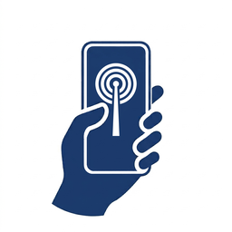

HelpKnock
지원
통신이 끊겨도 구조자가 나를 찾을 수 있게.
재난으로 네트워크가 끊기면 HelpKnock은 휴대폰 한 대 한 대를 Bluetooth 비콘으로 바꿉니다. 갇힌 사람이 주변 구조자에게 자신을 알리고 메시지를 주고받을 수 있게 돕는 근거리 구조 앱입니다.
HelpKnock은 긴급 서비스를 대체할 수 없습니다. 휴대폰 신호가 조금이라도 잡히면 먼저 지금 있는 곳의 긴급 전화번호로 전화하세요.
문의
문제를 알리거나 질문하려면 GitHub에 이슈를 등록하고 제목 앞에 [HelpKnock]을 붙여 주세요. GitHub 계정이 없다면 vulcan.shen.2304@gmail.com으로 이메일을 보내 주세요. 제대로 작동하지 않을 때는 iPhone 또는 iPad 모델과 iOS 버전을 함께 알려 주세요.
번역이 틀리거나 어색한 곳을 발견하면 같은 방법으로 알려 주세요.
시작하기
- 평소에 미리 정보를 입력하고 공유할 내용을 고릅니다.
- Bluetooth, 위치, “동작 및 피트니스”, “로컬 네트워크”를 허용합니다.
- 위급할 때는 앱을 열고 “도움이 필요합니다”를 누릅니다.
HelpKnock은 무료인가요?
네. 모든 기능이 무료입니다. HelpKnock 설정의 “개발자 후원”은 선택 사항이며, 후원해도 잠금 해제되는 기능은 없습니다.
상대방 휴대폰에도 HelpKnock이 필요한가요?
네. 내 기기와 상대방 기기 모두 HelpKnock이 설치되어 있고 Bluetooth가 켜져 있어야 합니다.
얼마나 멀리까지 닿나요?
Bluetooth는 짧은 거리만 닿으며, 벽이나 잔해를 사이에 두면 더 짧아집니다.
앱을 닫아도 되나요?
아니요. 앱 전환기에서 HelpKnock을 위로 쓸어 올려 종료하지 마세요. 종료하면 iOS가 앱을 자동으로 다시 실행하지 않으므로 아무도 나를 찾을 수 없게 됩니다. 기기를 재시동한 후에는 앱을 다시 열어 주세요.
개인정보
HelpKnock에는 서버도 계정도 없습니다. 내가 입력한 내용은 내 휴대폰에 저장되며, 주변 휴대폰에는 Bluetooth로, 같은 Wi-Fi에 연결된 구조자에게는 Wi-Fi로 전달될 뿐입니다. 자세한 내용은 개인정보 처리방침을 확인하세요.
요구 사항
iOS 18.6 이상의 iPhone 또는 iPad에서 Bluetooth를 켜고 사용하세요.